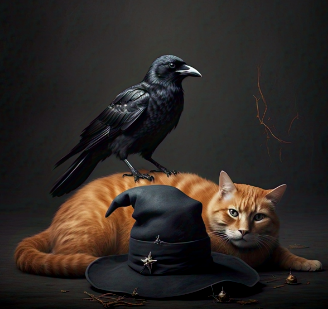

Fallaste. El Cuervo SombrÃo se alzó en la batalla final y, con un solo golpe, te arrebató el Cristal de los Elementos. Tu magia no fue suficiente.
El bosque comienza a marchitarse. El cielo se oscurece. Una niebla espesa cubre la tierra, y con ella, la esperanza desaparece.
Magordito, has caÃdo. Y con tu derrota, el mundo ha sido condenado.
Las sombras devoran todo. Este es el fin.
Deseas volver a intentarlo?
< Reintentar?